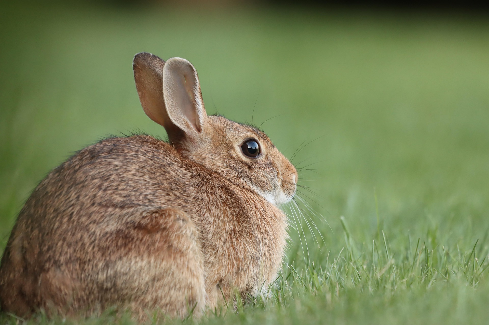

Tout sur le lapin
Le lapin est un petit animal aux longues oreilles. On le trouve dans lanature et beaucoup de familles l'adoptent
comme animal de compagnie. Il est un sympa animal de compagnie
Son apparence
Sa queue
Ses oreilles
Ses longues reilles lui permettent d'entendre les bruits de très loin
Son pelage
Son pelage peut être blanc, gris, brun ou tacheté

Son alimentation
- Foin de qualité : élément essentiel qui doit représenter 80 % de son alimentation
quotidienne.
- Herbes fraîches et verdure : pissenlit, persil, coriandre, basilic, menthe et fanes de
carottes.
- Légumes verts : endive, céleri branche, fenouil, salade romaine et courgette.
- Granulés sans céréales : à donner en petite quantité en complément des légumes.
- Fruits (friandises) : pomme, fraise ou banane en très faible dose car ils sont très sucrés.
- Eau fraîche : disponible en permanence dans une gamelle propre ou un biberon.
Le lapin est un herbivore strict dont le régime quotidien doit être composé à 80 % de foin, complété par de la
verdure fraîche et une très petite quantité de granulés